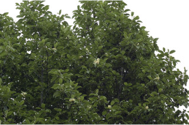
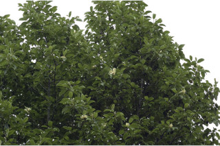
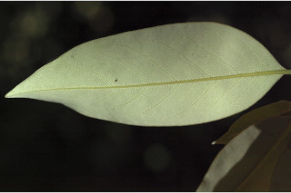
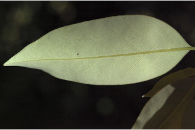
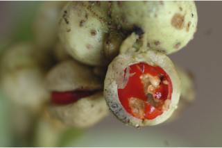
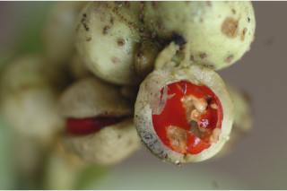

Trees, up to 15 m tall
15 ಮೀ. ಎತ್ತರದವರೆಗೆ ಬೆಳೆಯುವ ಮರಗಳು.
15 മീറ്റര് വരെ ഉയരമുള്ള മരങ്ങള്
மரங்கள் 15 மீ. உயரம் வரை வளரக்கூடியது.
Bark grey, smooth; blaze light orange.
ತೊಗಟೆ ನಯವಾಗಿದ್ದು ಬೂದು ಬಣ್ಣ ಹೊಂದಿರುತ್ತದೆ;ಕಚ್ಚು ಮಾಡಿದ ಕಿತ್ತಳೆ ಬಣ್ಣದಲ್ಲಿರುತ್ತದೆ.
ചാര നിറത്തിലുള്ള മിനുസമാര്ന്ന പുറം തൊലി; വെട്ടുപാടിന് ഇളം ഓറഞ്ച് നിറം.
மரத்தின் பட்டை சாம்பல் நிறமானது, வழுவழுப்பானது; உள்பட்டை வெளிறிய ஆரஞ்சு நிறமானது.
Branchlets terete, pubescent, with annular scars of caducous stipules; apical bud covered by sericeous lanceolate stipules.
ಕಿರುಕೊಂಬೆಗಳು ದುಂಡಾಗಿರುತ್ತವೆ ಮತ್ತು ಉದುರಿದ ಕಾವಿನೆಲೆಗಳ ವಲಯಾಕಾರದ ಗುರುತುಗಳ ಸಮೇತವಿರುತ್ತವೆ ಹಾಗೂ ಮೃದು ತುಪ್ಪಳದಿಂದ ಕೂಡಿರುತ್ತದೆ;ಅಗ್ರದಲ್ಲಿನ ಅಂಕುರಗಳು ರೇಷ್ಮೆಯಂತಹ ಭರ್ಜಿಯಾಕಾರದ ಕಾವಿನೆಲೆಗಳಿಂದ ಸೂಕ್ಷ್ಮವಾದ ಮೃದು ತುಪ್ಪಳದಿಂದ ಮುಚ್ಚಿರುತ್ತವೆ.
പെട്ടന്ന് കൊഴിഞ്ഞ് വീഴുന്ന, അനുപര്ണ്ണങ്ങളുടെ വാര്ഷിക അടയാളങ്ങളുള്ള, ഉരുണ്ട, ഉപശാഖകള് നനുത്തരോമിലമാണ്, അഗ്രമുകുളങ്ങള്, സില്ക്ക് രോമങ്ങള് നിറഞ്ഞ, കുന്താകാരത്തിലുള്ള അനുപര്ണ്ണങ്ങളാല് ആവൃതമാണ്.
சிறிய நுனிக்கிளைகள் குறுக்குவெட்டுத் தோற்றத்தில் வளையமானது, உரோமங்களுடையது, இலையடிச்செதில் உதிர்ந்ததால் உண்டாகும் வட்டவடுக்களுடையது; தண்டின் நுனியிலுள்ள மொட்டுவை மிக நுண்ணிய உரோமங்களுடைய ஈட்டி வடிவ செதில் மூடியிருக்கும்.
Leaves simple, alternate, spiral; petiole up to 2 cm long, canaliculate, pubescent; lamina 5-11 x 2.2-4.8 cm, elliptic to elliptic-lanceolate, apex acute to slightly acuminate with blunt tip, base acute to attenuate, margin entire, subcoriaceous, glabrous, white glaucous beneath; midrib slightly canaliculate; secondary_nerves 10-13 pairs; tertiary_nerves closely reticulate.
ಎಲೆಗಳು ಸರಳವಾಗಿದ್ದು, ಪರ್ಯಾಯ ಮತ್ತು ಸುತ್ತು ಜೋಡನಾ ವ್ಯವಸ್ಥೆಯಲ್ಲಿರುತ್ತವೆ; ತೊಟ್ಟುಗಳು 2 ಸೆಂ.ಮೀ.ವರೆಗಿನ ಉದ್ದವಿದ್ದು ಕಾಲುವೆಗೆರೆ ಸಮೇತವಿರುತ್ತದೆ ಹಾಗೂ ಮೃದು ತುಪ್ಪಳದಿಂದ ಕೂಡಿರುತ್ತದೆ;ಪತ್ರಗಳು 5-11 x 2.2 – 4.8 ಸೆಂ.ಮೀ ಗಾತ್ರ ಹೊಂದಿದ್ದು ಅಂಡವೃತ್ತದಿಂದ ಅಂಡವೃತ್ತ –ಭರ್ಜಿ ಆಕಾರದ -ಲ್ಲಿರುತ್ತವೆ. ಪತ್ರಗಳು ಚೂಪಾದದುದರಿಂದ ಮೊಂಡಾಗ್ರವುಳ್ಳ ತುಸುವಾಗಿ ಕ್ರಮೇಣ ಚೂಪಾಗುವ ತುದಿಯನ್ನು ಹೊಂದಿರುತ್ತವೆ ಮತ್ತು ಚೂಪಾದುದರಿಂದ ಒಳಬಾಗಿದ ಬುಡ ಹೊಂದಿದ್ದು ರೋಮರಹಿತವಾಗಿರುತ್ತವೆ; ಅಂಚು ನಯವಾಗಿ -ರುತ್ತದೆ; ಮೇಲ್ಮೈ ಉಪತೊಗಲನ್ನೋಲುವ ಮಾದರಿಯಲ್ಲಿರುತ್ತದೆ ಮತ್ತು ತಳಭಾಗದಲ್ಲಿ ಮಾಸಿದ ಬಿಳಿ ಬೂದು ಹಸಿರು ಬಣ್ಣ ಹೊಂದಿರುತ್ತದೆ; ಮಧ್ಯನಾಳ ಪತ್ರದ ಮೇಲ್ಭಾಗದಲ್ಲಿ ಕೊಂಚ ಚಪ್ಪಟೆಯಾಗಿರುತ್ತದೆ; ಎರಡನೇ ದರ್ಜೆಯ ನಾಳಗಳು 10 ರಿಂದ 13 ಜೋಡಿಗಳಿರುತ್ತವೆ; ಮೂರನೇ ದರ್ಜೆಯ ನಾಳಗಳು ಸನಿಹವಾಗಿದ್ದು ಜಾಲಬಂಧ ನಾಳ ವಿನ್ಯಾಸದಲ್ಲಿರುತ್ತವೆ.
ലഘുവായ ഇലകള്, ഏകാന്തരക്രമത്തില്, സര്പ്പിളമായടുക്കിയതാണ്; ചാലുള്ള നനുത്ത രോമിലമായ ഇലഞെട്ടിന് 2 സെ. മി. വരെ നീളം; പത്രഫലകത്തിന് 5 സെ. മി. മുതല് 11. സെ. മി വരെ നീളവും 2.2 സെ. മി. മുതല് 4 സെ. മി. വരെ വീതിയും, ആകൃതി ദീര്ഘവൃത്താകാരം തൊട്ട് ദീര്ഘവൃത്തീയ-കുന്താകൃതി വരെയുമാണ്, പത്രാഗ്രം നിശിതം തൊട്ട് മുനപ്പില്ലാത്ത അറ്റത്തോടുകൂടിയ ചെറു ദീര്ഘാഗ്രവുമാണ്, പത്രാധാരം നിശിതം തൊട്ട് നിര്ത്തവസാനിക്കുന്നത് വരെയാകാം, അരികുകള് അവിഭജിതം, ഉപചര്മ്മിലപ്രകൃതം, അരോമിലം, കീഴെ നീലരാശി കലര്ന്ന വെളുപ്പാണ്; മുഖ്യ സിര ചെറുതായി ചാലുള്ളതാണ്; 10-മുതല് 13 വരെ ജോഡി ദ്വിദീയ ഞരമ്പുകള്; ത്രിതീയ ഞരമ്പുകള് അടുത്ത ജാലി#്തമാണ്
இலைகள் தனித்தவை, மாற்றுஅடுக்கமானவை, சுழல் போல் அமைந்தது; இலைக்காம்பு 2 செ.மீ. நீளமானது, குறுக்குவெட்டுத் தோற்றத்தில் கேனாலிகுலேட், உரோமங்களுடையது; இலை அலகு 5-11 X 2.2-4.8 செ.மீ., நீள்வட்டம் முதல் நீள்வட்ட-ஈட்டி வடிவானது, அலகின் நுனி கூரியது முதல் சிறிது அதிக்கூரியதுடன் மழுங்கிய முனையுடையது, அலகின் தளம் கூரியது முதல் அட்டனுவேட், அலகின் விளிம்பு முழுமையானது, சப்கோரியேசியஸ், அலகின் இருபுறங்களும் உரோமங்களற்றது, அலகின் பின்புறம் வெள்ளை நிறமான மெழுகு பூசினது போன்றது (க்களாக்கஸ்); மையநரம்பு மேற்பரப்பில் அலகின் பரப்பைவிட சிறிது பள்ளமானது; இரண்டாம் நிலை நரம்புகள் 10-13 ஜோடிகளுடையது; மூன்றாம் நிலை நரம்புகள் நெருக்கமான வலைப்பின்னல் போன்றது.
Flowers solitary, axillary, large, white or cream.
ಹೂಗಳು ದೊಡ್ಡದಾಗಿದ್ದು, ಬಿಳಿ ಅಥವಾ ಕೆನೆ ಬಣ್ಣ ಹೊಂದಿದ್ದು ಅಕ್ಷಾಕಂಕುಳಿನಲ್ಲಿ ಒಂಟಿಯಾಗಿರುತ್ತವೆ.
വെളുത്തതോ ക്രീം നിറത്തിലോ ഉള്ള വലിയ പൂക്കള് ഒറ്റയ്ക്കായി കക്ഷങ്ങളിലുണ്ടാകുന്നു.
மலர்கள் தனித்து, இலைக்கோணங்களில் காணப்படுவது, பெரியவை, வெள்ளை அல்லது கிரீம் நிறமானது.
Follicles, warty, arranged as spike, dehiscing dorsally; seed 1, scarlet.
ಕಾಯಿಗಳು ಫಾಲಿಕಲ್ ಮಾದರಿಯಲ್ಲಿದ್ದು ಗಂತಿಗಳನ್ನು ಹೊಂದಿರುತ್ತವೆ ಮತ್ತು ಕದಿರುಮಂಜರಿಯ ರೀತಿ ವ್ಯವಸ್ಥಿತವಾಗಿರುತ್ತವೆ;ಫಾಲಿಕಲ್ಗಳು ಬೆನ್ನಿನ ಬಳಿಯಲ್ಲಿ ಬಿರಿಯುತ್ತವೆ;ಬೀಜ 1 ದ್ದು ಕಡುಗೆಂಪು ಬಣ್ಣ ಹೊಂದಿರುತ್ತದೆ.
കടും ചുവപ്പുനിറമുള്ള, ഒറ്റ വിത്തുള്ള കായ, സ്പൈക്കായി അടുക്കിയിരിക്കുന്നു, പുറം ഭാഗത്തുകൂടി പൊട്ടുന്ന, കുരുക്കള് നിറഞ്ഞ, ഫോളിക്കിളുകളാണ്.
பாலிக்கிள், சொரசொரப்பானது, காம்புகளற்றவை, ஸ்பைக் அமைந்தவை, கனி பின்புறத்தில் வெடிக்கக்கூடியது; விதை ஒன்று, கருஞ்சிவப்பு நிறமானது.


 



 



 
